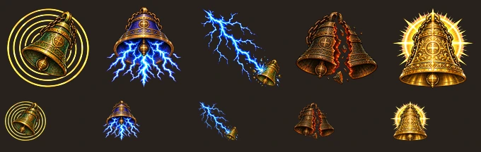
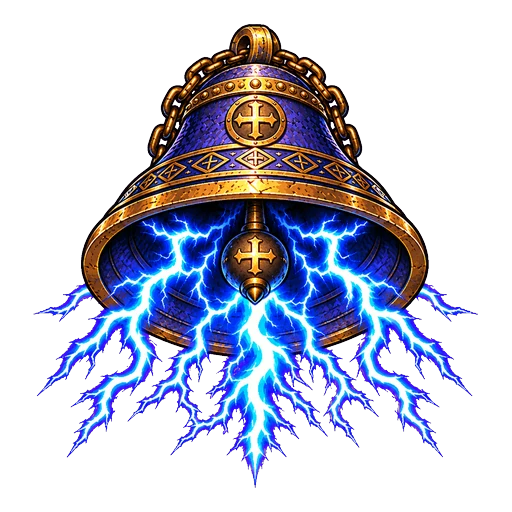
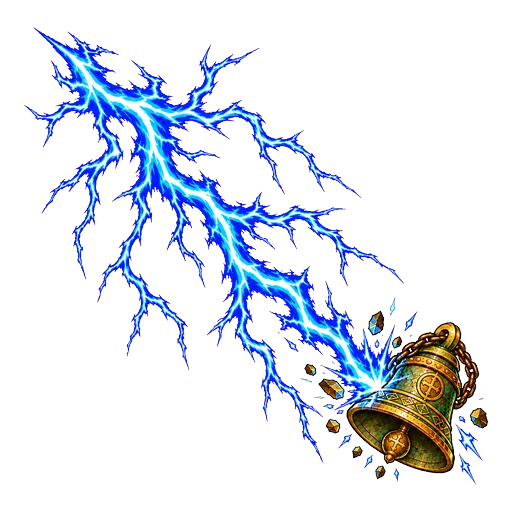
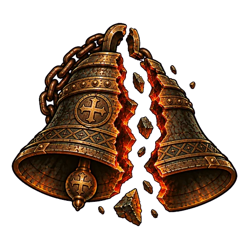
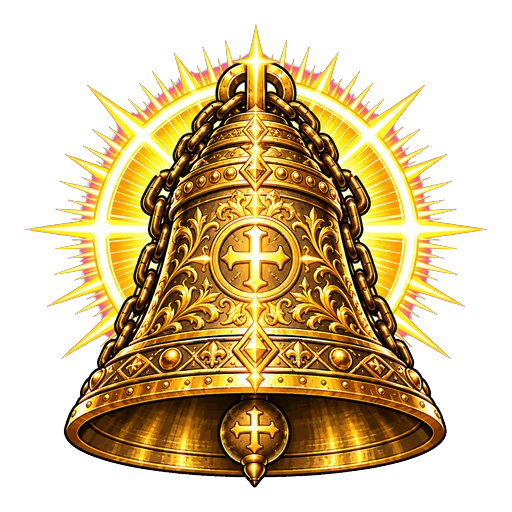
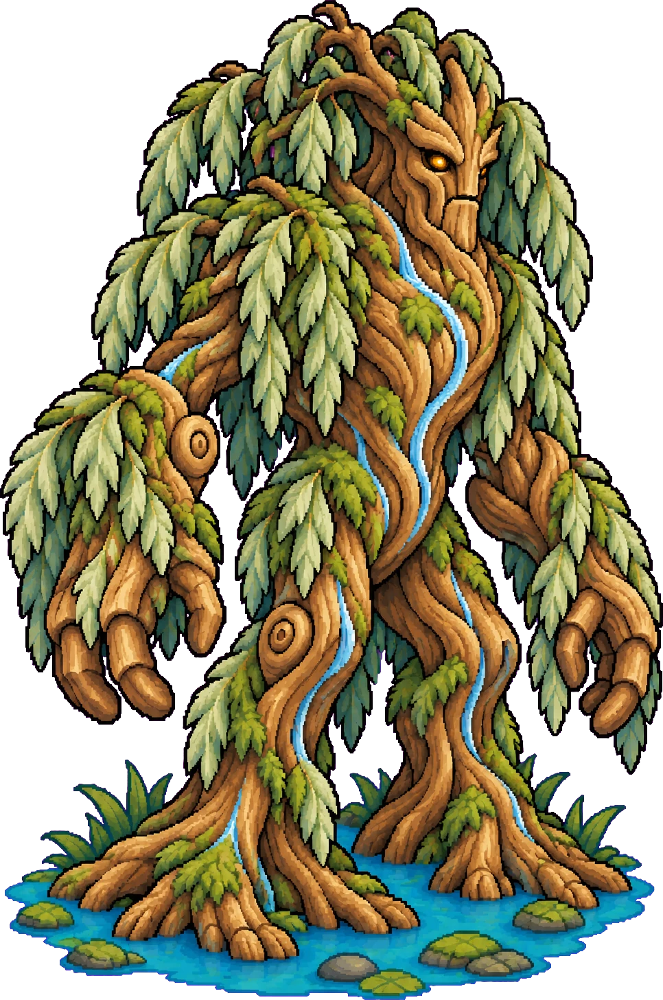
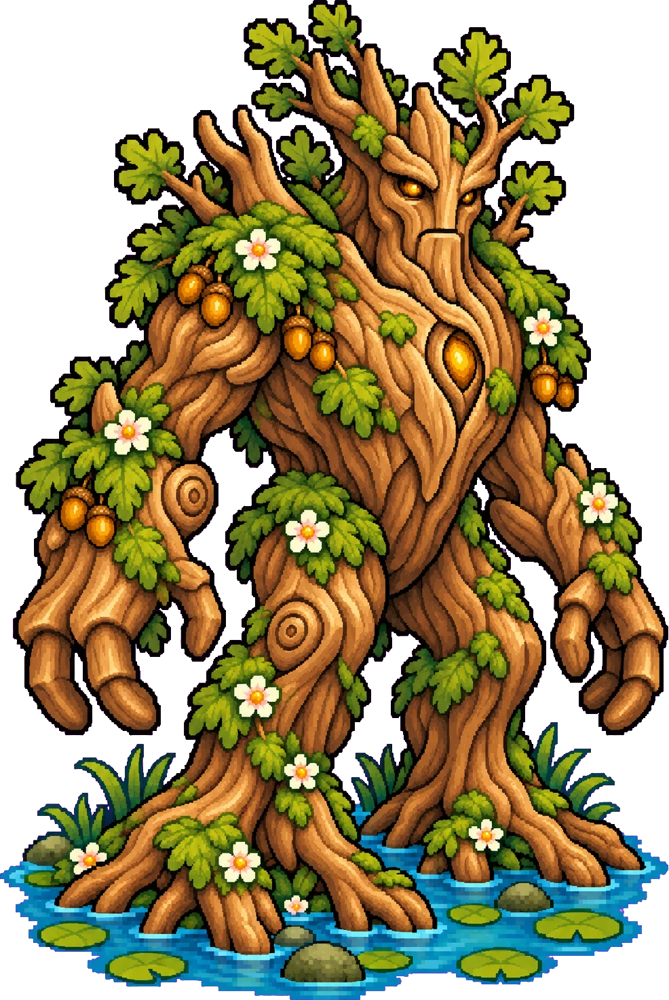
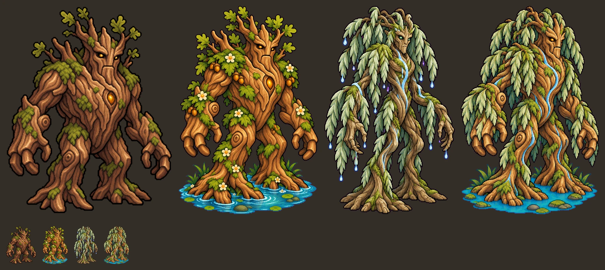
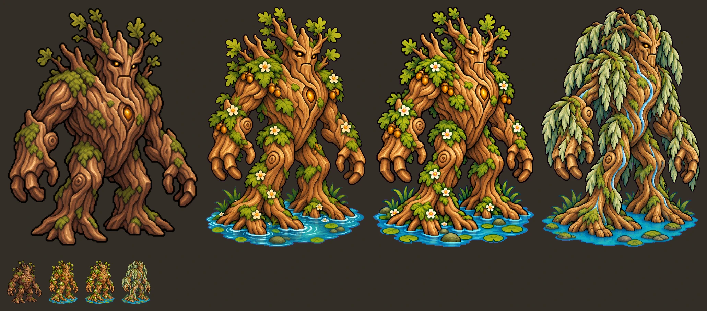

<meta charset="utf-8"><meta name="viewport" content="width=device-width,initial-scale=1">
<title>Art Round 2</title>
<style>
:root{--bg:#f3efe9;--fg:#2a2420;--muted:#6b6058;--line:#d9d0c4;--card:#fffdf9;--accent:#7a3b2e;--mono:ui-monospace,Consolas,monospace}
@media (prefers-color-scheme:dark){:root{--bg:#1b1714;--fg:#ece4d8;--muted:#a09484;--line:#3a322b;--card:#241f1b;--accent:#d9a066;color-scheme:dark}}
html{background:var(--bg)}body{margin:0;background:var(--bg);color:var(--fg);font:16px/1.55 Georgia,serif;padding:28px max(16px,env(safe-area-inset-right,0px)) 64px max(16px,env(safe-area-inset-left,0px))}
main{max-width:1100px;margin:0 auto;display:flex;flex-direction:column;gap:32px}
h1{font:600 2rem/1.15 Georgia,serif;margin:0}h2{font:600 1.25rem/1.2 Georgia,serif;margin:0}
p{margin:0;max-width:65ch}.sub{color:var(--muted)}
section{display:flex;flex-direction:column;gap:12px}
.row{display:flex;flex-wrap:wrap;gap:16px;align-items:flex-end}
figure{margin:0;display:flex;flex-direction:column;gap:6px;min-width:0}
figure img,.wide{display:block;border:1px solid var(--line);background:var(--card);max-width:100%;height:auto}
figcaption{font:.8rem var(--mono);color:var(--muted)}
a{color:var(--accent)}
</style>
<main>
<header><h1>Art Round 2</h1><p class="sub">Vesper skill icons redrawn so each one reads differently, and a new Treant look. Nothing is in the game. Tap an image for full size.</p></header>

<section>
<h2>Vesper skill icons</h2>
<p class="sub">Top row 128px, bottom row 64px. Each has its own shape and main colour. Thunderpeal has two options, A and B.</p>
<a href="art-round2/onizleme.webp" target="_blank"></a>
<div class="row">
<figure><a href="art-round2/toll.webp" target="_blank"></a><figcaption>Toll: swinging bell, gold rings</figcaption></figure>
<figure><a href="art-round2/thunderpeal-A.webp" target="_blank"></a><figcaption>Thunderpeal A: bell seen from below, lightning out of its mouth</figcaption></figure>
<figure><a href="art-round2/thunderpeal-B.webp" target="_blank"></a><figcaption>Thunderpeal B: long forked bolt, small bell at its tip</figcaption></figure>
<figure><a href="art-round2/cracked_bell.webp" target="_blank"></a><figcaption>Cracked Bell: two halves, ember crack</figcaption></figure>
<figure><a href="art-round2/great_bell_of_valdoria.webp" target="_blank"></a><figcaption>Great Bell of Valdoria: gold and white, halo</figcaption></figure>
</div>
</section>

<section>
<h2>Treant: two options</h2>
<p class="sub">Option 1 mixes A and B with no drops. Option 2 is A redrawn. Both keep a calm pool at the feet. Drops are gone from both.</p>
<div class="row">
<figure><a href="art-round2/treant-AB.webp" target="_blank"></a><figcaption>Option 1: oak body, willow leaves, thin stream of water</figcaption></figure>
<figure><a href="art-round2/treant-A2.webp" target="_blank"></a><figcaption>Option 2: A redrawn, acorns and healing flowers kept</figcaption></figure>
</div>
<p class="sub">Side by side at game size and 128px. Option 1 comparison: current, A, B, option 1. Option 2 comparison: current, A, option 2, option 1.</p>
<a href="art-round2/treant-karsilastirma.webp" target="_blank"></a>
<a href="art-round2/treant-karsilastirma-b.webp" target="_blank"></a>
<p class="sub">Known: both face right but not as strongly three-quarter as the earlier option C. Option 2 looks close to the old A, outline slightly sharper. Leaf curtain in option 1 is dense at small size.</p>
</section>
</main>
